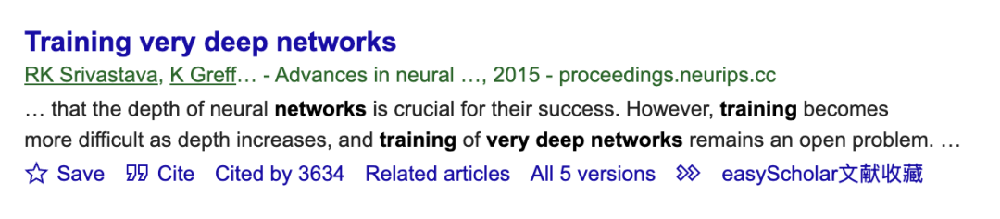
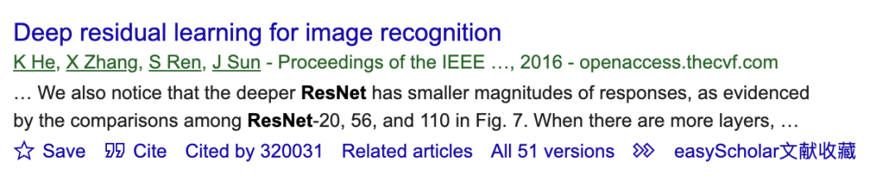
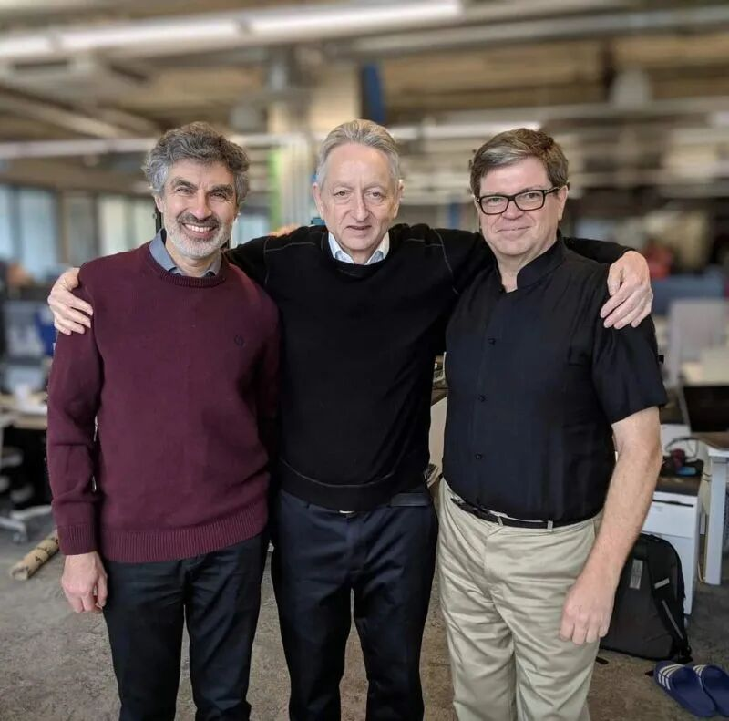
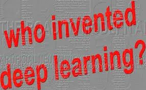

在回顾深度学习的历史时，发现了一个屡屡出现，但此前却鲜有耳闻的名字——Jürgen Schmidhuber。他发明了LSTM，不仅先于Hinton（深度学习教父）、Ilya和Alex使用GPU训练深度卷积神经网络，还在何恺明（Kaiming He）之前大规模使用类似残差的结构，训练出了超过百层的神经网络。可是，为什么他没能成为像Hinton、何恺明那样被供奉在深度学习殿堂的教父级人物呢？
1. 过于追求学术严谨。
作为一名德国计算机科学家，Schmidhuber极其在意逻辑的严密性。他发表的论文极具启发性和前瞻性，甚至在90年代就提出了类似注意力机制的雏形（尽管当时没有非线性激活函数等），启发了包括Ilya和DeepMind创始人在内的一代深度学习科学家。然而，作为纯粹的学术专家，他在指明了发展方向之后，并不太在意后续的工程实现。比如，他在《Training Very Deep Networks》（使用门控机制来进行残差连接）中提出了训练出百层深度神经网络的方法，但并没有在ImageNet上取得轰动（很大原因是门控机制引入了过多参数，使得网络优化变得十分困难，难以训练）。


2. 能力极强且性格孤傲。
极度自信的Schmidhuber，即使在神经网络陷入最低谷时，也不屑于和“深度学习三巨头”（Hinton、LeCun、Bengio）抱团取暖，而是独自一人在欧洲的小圈子里搞研究。相比之下，此时的三巨头则通过互相引用论文、拉项目、深度讨论，一起熬过了神经网络的寒冬。

3. 不擅长“讲故事”。
Hinton和LeCun非常擅长用通俗的语言、类比的手法，向普通人讲清楚AI在干什么。而Schmidhuber则倾向于使用极其严谨、数学化的表达。比如对于几乎同一个概念，Hinton将其命名为直白易懂的“Dropout”，而Schmidhuber的命名则是“Market-based credit assignment in a network of evolving adaptive reinforcement learners”。显然，后者在传播学上已经被判了死刑。

Schmidhuber无疑是深度学习领域极其伟大的学者，但历史和社会往往会奖励那些对人类发展进程产生最直接、最大规模影响的人。从AlexNet到ResNet的爆发，Schmidhuber似乎一直都没想明白，为什么世界没有给他想要的认可，以至于从15年到现在，他还经常在推特和博客上抨击三巨头。
这给我们留下了一个启示：如何才能最大程度地为人类发展做出贡献？答案可能是——做出简洁可复用的成果、清晰易懂的表达、保持心态开放并拥抱合作。人的价值，终归要体现在对他人的实际贡献之中。